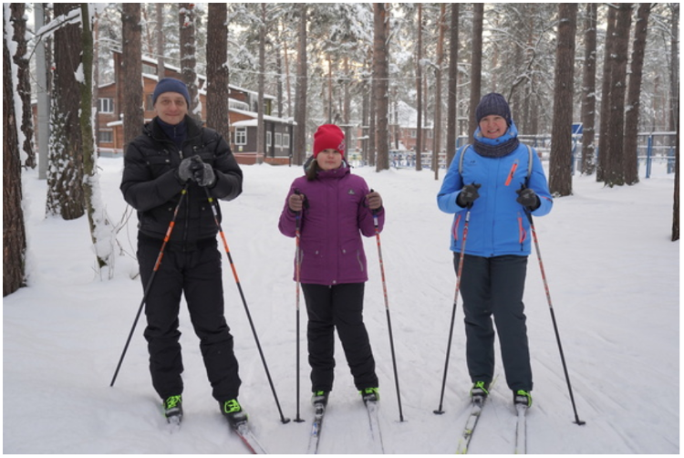

Победитель 1264-го тиража лотереи «Русское Лото». Дата ТВ-трансляции: 01 января 2019 года»
Ольга Болтрукова
«Я счастливый человек, у меня хорошая семья, есть всё необходимое, а ещё я выиграла в лотерею», — говорит победительница «Русского лото» Ольга Болтрукова.

Болтруковы активно проводят свободное время: зимой катаются на лыжах, а летом рыбачат, собирают грибы и устраивают пикники.
Об участии
Ольга Болтрукова работает в детском саду, а её муж Евгений — водитель. Именно супруг Ольги купил счастливый лотерейный билет и подарил ей на Новый год. Результаты розыгрыша женщина узнала в интернете.
О выигрыше
«Я много раз перепроверяла числа, выучила наизусть номер билета! Не передать словами эмоции, которые я испытала, когда увидела миллион», — вспоминает Ольга. Для оформления выигрыша ей нужно было приехать в лотерейный центр в Москве. Победительница очень волновалась, ведь самый быстрый способ добраться до столицы — на самолёте — был для неё в новинку. «Не спала три дня, всё думала, каким будет полёт. Но я мечтала побывать в Москве, и эта мысль меня успокаивала», — делится участница.
О жизни после
Ольга и её муж давно мечтали об иномарке, поэтому женщина сразу решила, что потратит выигрыш на покупку нового автомобиля. Супруги изучали модели и марки, читали отзывы в интернете и в итоге выбрали машину японского производителя.